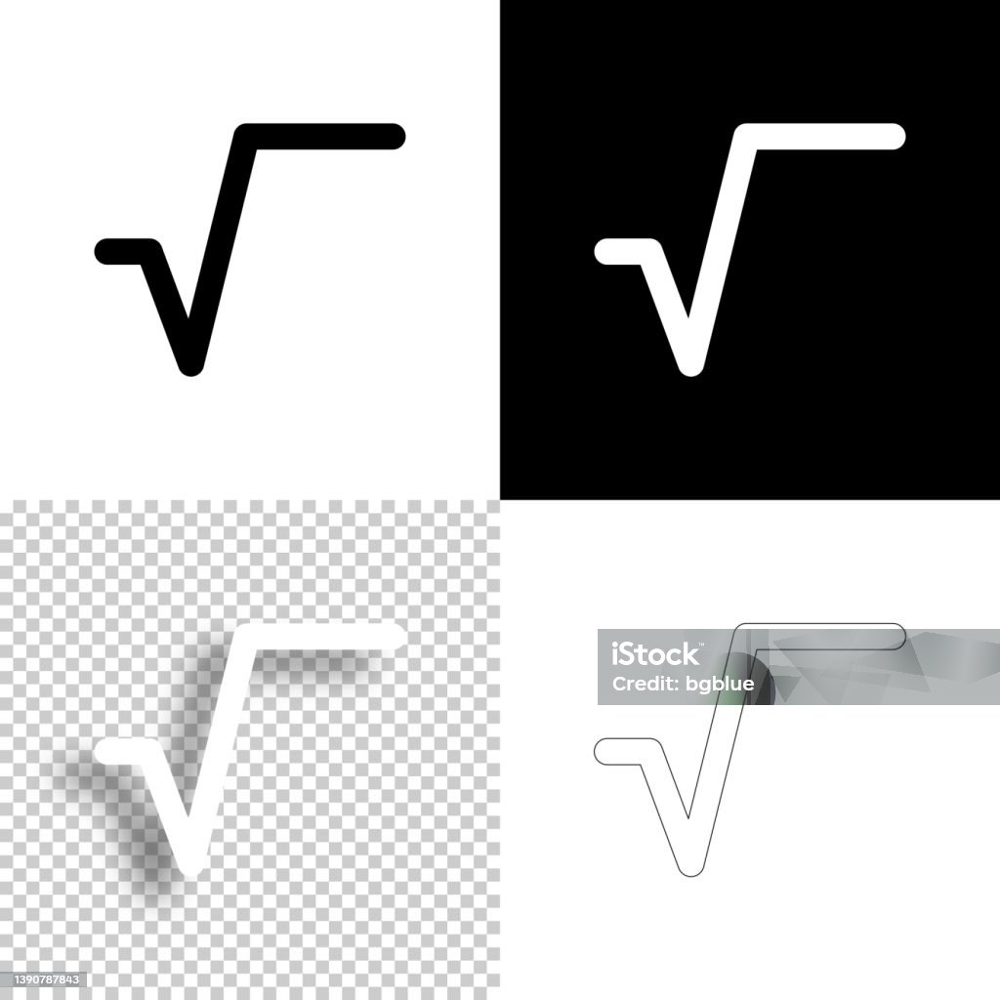
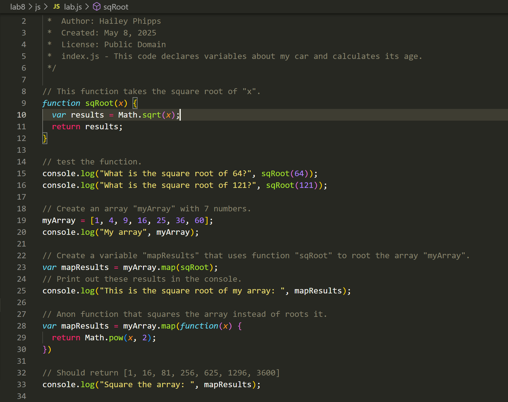

Lab 8 - Anon Functions & Callbacks
Challenge
The challenge of Lab 8 is to experiment with anonymous functions and callbacks, while working with a partner. My functions take the square root and square an array.
Problems
I had trouble getting the console to correctly perform the functions on my array. After some trial and error, I figured out the issue: there was a typo, using the function on "array" instead of "myArray". After I correctly changed the JavaScript to perform the function on "myArray", the functions worked properly within the console.
Results
Well, you are viewing the index.html file that I created.
Here is the program execution, which takes the square root and square of my Array:
Script Output
Below is a screenshot of my JavaScript code in VSCode.
